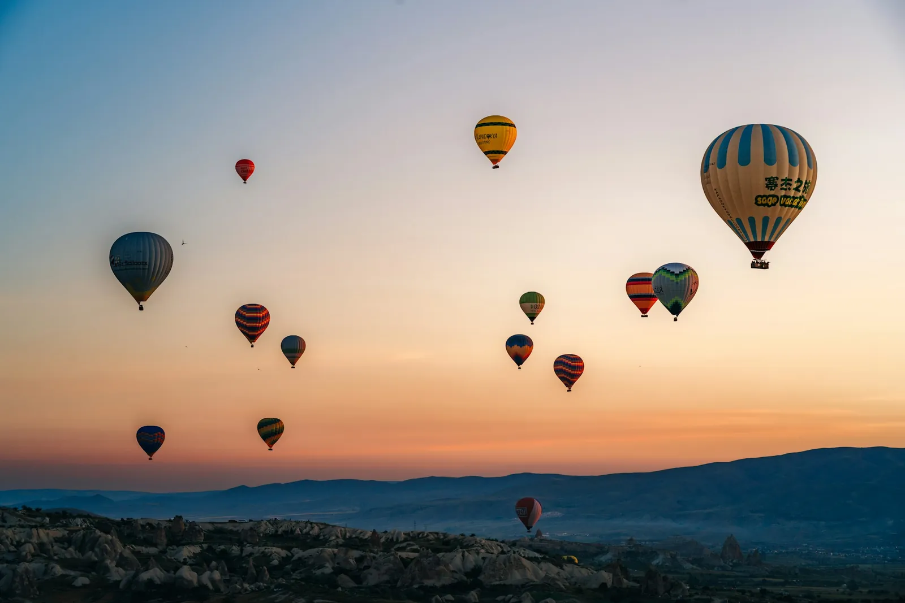

Volo
Punti cliccabili sopra una foto: ogni pallone è un volo, con il suo fumetto che resta dentro la foto, anche ai bordi.
Come si usa
- Mouse
- Clicca un pallone: il fumetto dice nome, decollo e posti liberi. Un altro clic o Esc lo chiude.
- Tocco
- Tocca un pallone, oppure scorri i voli con le frecce sotto la foto (i palloni vicini sono piccoli).
- Tastiera
- Tab passa i voli in ordine di decollo; le frecce saltano al pallone più vicino in quella direzione.
Consiglio
I punti sono in percentuale sulla foto: restano sul pallone a qualunque larghezza. Anello tratteggiato = volo al completo.